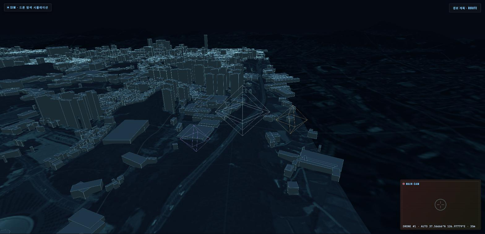
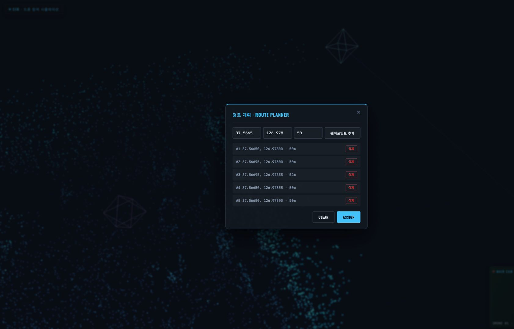
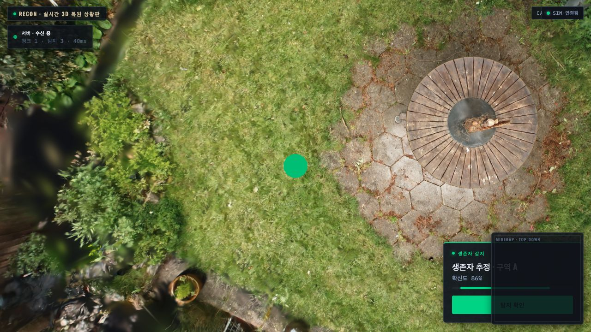

화면 둘러보기
사람이 보는 화면은 둘이에요. 관제탑은 드론을 어디로 보낼지 정하는 화면이고, 현황판은 복원된 현장을 3D로 보는 화면이에요. 역할이 다르니까 보이는 것도 달라요.
관제탑 · CONTROL
관제탑: 어디로 보낼지 정하는 화면
오퍼레이터가 드론의 경로를 GPS 좌표로 지정하는 화면이에요. 실제 지형 위에 드론의 현재 위치가 그려지고, 메인 드론이 보내는 카메라 영상이 우측 아래 패널에 떠요.

지형은 실제 데이터예요
배경으로 깔리는 지형과 건물은 그린 그림이 아니라 공개 데이터예요. 고도는 AWS Terrain Tiles DEM(한국 약 30m급), 위성 영상과 건물 폴리곤은 VWorld에서 받아 와요. 건물은 지붕 높이까지 입체로 세워요.
기준 씬은 대전(충남대~카이스트 일대)이에요. 반경 약 3km, 건물 약 6,191동이 올라가요. 드론 주변부터 가까운 순서로 실시간으로 불러오고, 씬 바깥쪽에는 3배 넓은 저해상 지형 링을 둘러서 끝이 잘려 보이지 않게 해요.
| 표시 옵션 | 이럴 때 좋아요 |
|---|---|
| 점 | 건물을 포인트로만 찍어요. 가장 가볍고, 드론 위치가 잘 보여요 |
| 검정 텍스처 (기본값) | 건물 덩어리가 또렷해요. 경로를 잡을 때 지형지물 판단이 쉬워요 |
| 실사 항공뷰 | 위성·항공 영상을 그대로 입혀요. 실제 현장과 대조할 때 좋아요 |
경로는 클릭으로 찍어요
툴바의 경로 계획 · ROUTE를 누르면 지도가 떠요. 가고 싶은 지점을 찍으면
GPS 웨이포인트가 쌓이고, ASSIGN을 누르면 리더 드론이 그 경로를 따라
비행해요. 나머지 드론은 리더와 일정한 간격을 유지하며 따라가요.

| 키 | 동작 |
|---|---|
↑ ↓ ← → |
수동 조향. 전진·후진과 좌우 회전이에요 |
Q · E |
고도를 올리고 내려요 |
1 2 3 · Tab |
조종할 드론을 바꿔요 |
Space |
일시정지 |
현황판 · STATUS
현황판: 도착한 것만 보이는 화면
지휘관이 보는 3D 상황판이에요. 서버가 복원을 마친 구간을 보내오면 그 구간이 화면에 나타나요. 드론이 지나갔다고 보이는 게 아니라 복원돼서 도착해야 보여요.
AI가 찾은 사람과 위험구역은 GPS 좌표로 도착해서 3D 위에 마커로 얹혀요. 마커도 해당 구간이 복원돼야 표시돼요. 마커를 누르면 카메라가 그 지점으로 날아가고, 확인을 누르면 원래 보던 곳으로 돌아와요.

비어 있으면 비워 둬요
파이프라인이 끊겨 있으면 화면은 그 자리를 비워 두고 끊겼다고 표시해요. 그럴듯한 가짜 장면을 대신 그리지 않아요. 지휘관이 보고 있는 게 실제로 도착한 정보인지 아닌지가 헷갈리면 안 되니까요.
딜레이 패턴: 거칠게 먼저 보여주고, 뒤에서 다듬어요
한 구간을 최종 품질까지 다 만들어서 보내면, 지휘관은 그동안 아무것도 못 봐요. 그래서 낮은 품질을 먼저 확정해 띄우고 뒤에서 정제해요. 앞 구간을 다듬는 동안 다음 구간의 첫 결과가 도착하니까, 화면에는 서로 다른 수준의 구간이 동시에 올라와 있어요.
품질은 3D 장면을 얼마나 학습했는지로 갈려요. 수준이 올라갈수록 학습 스텝이 늘고, 그만큼 판단할 수 있는 게 늘어나요.
| 수준 | 학습 스텝 | 이때 판단할 수 있는 것 |
|---|---|---|
| 1 | 250 | 형상 윤곽만 보여요 |
| 2 | 1,000 | 공간이 어떻게 생겼는지 알 수 있어요 |
| 3 | 3,500 | 표면이 만들어져요 |
| 4 | 7,000 | 진입 동선을 판단할 수 있는 실용 품질이에요 |
노란 선이 그어진 순간을 보면, 구간 1·2는 이미 최종 품질이고 구간 3은 아직 표면을 만드는 중, 구간 4는 윤곽만 잡혀 있어요. 같은 화면에 네 구간이 서로 다른 수준으로 동시에 올라와 있는 게 정상이에요.
알아 두면 좋은 세 가지
- 다음 구간이 열리는 기준은 시간이 아니라 드론의 이동량이에요. 드론이 한 구간을 통과해야 그 구간의 수준 1이 확정돼요.
- 새 수준은 낮은 수준을 교체해요. 쌓이지 않아요. 처리가 밀려서 이미 추월당한 수준은 아예 건너뛰어요.
- 순서를 정하는 쪽은 서버예요. 화면은 도착한 걸 받아서 그릴 뿐, 스스로 타이머를 돌려 단계를 올리지 않아요.
두 화면은 서로 직접 연결되지 않아요
관제탑과 현황판 사이에는 파이프라인 전체가 놓여 있어요. 관제탑이 현황판에 직접 드론 위치를 쏘는 구조가 아니에요.
제어는 관제탑에서 서버로만 가고(경로 배정, 수동 조작),
배포는 서버에서 현황판으로만 가요. 현황판에서 서버로 되돌아가는 길은 일부러 만들지
않았어요. 그래야 "화면에 보인다 = 실제로 파이프라인을 통과해서
도착했다"가 하나의 진실로 유지되거든요.
구조가 궁금하면 시스템 구조로 가 보세요.